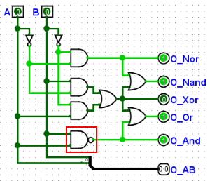

Окно тестовых векторов
Окно тестовых векторов похоже на вкладку «Таблица» панели «Временная диаграмма». Вы можете загрузить тестовый вектор из файла, и Logisim-evolution начнёт автоматически выполнять тесты для текущей схемы. Как и для временных диаграмм, для каждого проекта существует только одно окно тестовых векторов, и отображаемая таблица будет меняться в зависимости от того, какая схема моделируется в данный момент на холсте. Однако обратите внимание, что модуль тестовых векторов запускает отдельную копию среды моделирования, поэтому он никак не зависит от процесса моделирования в основном окне проекта и не мешает ему.
В качестве примера протестируем схему ниже. Эта схема вычисляет результаты пяти логических функций от двух входов. Она содержит ошибку: вместо логического элемента «И» (AND) по ошибке установлен элемент «И-НЕ» (NAND).

Файл тестового вектора для неё выглядит следующим образом:
A B O_Nor O_Nand O_Xor O_Or O_And O_AB[2] 0 0 1 1 0 0 0 00 0 1 0 1 1 1 0 01 1 0 0 1 1 1 0 10 1 1 0 0 0 1 1 11
Чтобы запустить тест, выберите пункт меню | Моделирование | → | Тестовые векторы… |, а затем нажмите кнопку Загрузить вектор. Выберите созданный вами текстовый файл вектора. Моделирование выполнится мгновенно, и на экране появится таблица с результатами.

Любые неверные значения на выходах будут отмечены красным цветом. Наведите курсор мыши на красное поле, чтобы увидеть подсказку о том, какое именно значение ожидалось на выходе согласно тестовому вектору. Строки с ошибками автоматически группируются в самом начале списка.
Формат файла чрезвычайно прост. Вы можете использовать экспорт из вкладки вывода временных диаграмм (с включённой опцией «Добавить строку заголовка») в качестве шаблона, так как в большинстве случаев формат вывода совпадает с тем, что ожидает модуль тестовых векторов.
Интерактивный запуск тестов
Каждая строка в окне тестовых векторов содержит две кнопки, которые позволяют вручную взаимодействовать с отдельными тестами:
-
Кнопка «Показать» (Show) (первый столбец): эта кнопка позволяет предварительно просмотреть состояние схемы без проверки ожидаемых значений на выходах.
- Комбинационные тесты (seq = 0): сбрасывает схему, устанавливает значения на входах и распространяет сигналы. Только выбранная строка подсвечивается зелёным цветом, указывая на то, что она была выполнена.
- Последовательные тесты (seq > 0): сбрасывает схему, затем последовательно выполняет все предшествующие шаги в наборе (от шага 1 до целевого шага включительно), производя моделирование после каждого шага. Все выполненные шаги подсвечиваются зелёным цветом, показывая путь выполнения.
-
Кнопка «Задать» (Set) (второй столбец): эта кнопка устанавливает значения на входах и может выполнять тесты.
- Комбинационные тесты (seq = 0): сбрасывает схему, применяет входные значения теста и затем запускает моделирование. Только выбранная строка подсвечится зелёным цветом.
- Последовательные тесты (seq > 0): НЕ сбрасывает схему и НЕ запускает другие тесты. Она просто устанавливает входные значения только для этого конкретного шага, а затем запускает моделирование. Только выбранная строка подсвечивается зелёным цветом. Это позволяет вручную пошагово проходить последовательность, задавая значения отдельных шагов без сброса схемы или повторного выполнения предыдущих шагов.
- Для обеих кнопок: если вы отключите автоматическое моделирование (флажок | Моделирование включено | в меню | Моделирование |), система не будет выполнять моделирование последнего шага в последовательности (или единственного шага в комбинационном тесте), останавливаясь сразу после установки значений на входных контактах. Это позволяет пошагово проследить распространение сигналов по схеме для данной строки.
Поведение подсветки:
- При нажатии кнопки «Показать» для комбинационного теста зелёным подсвечивается только эта конкретная строка.
- При нажатии кнопки «Показать» для последовательного теста все последовательные шаги (seq > 0) вплоть до целевого шага подсвечиваются зелёным цветом.
- При нажатии кнопки «Задать» зелёным подсвечивается только выбранная строка, независимо от того, является ли тест комбинационным или последовательным.
- Подсветка очищается при загрузке нового файла векторов или при сбросе моделирования схемы.
Назад: Тестовые векторы | Далее: Формат файла тестовых векторов.